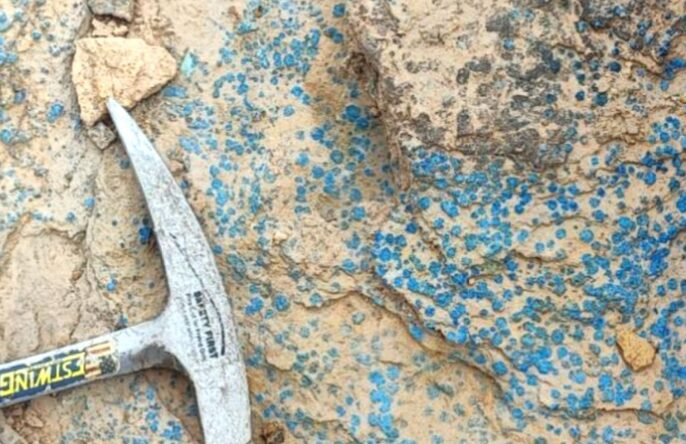

San Romeleo
San Romeleo se incorpora al Distrito Minero Malargüe Occidental
La propiedad San Romeleo fue incluida en el tercer grupo del Distrito Minero Malargüe Occidental (MDMO III), actualmente en evaluación ambiental, que prevé tareas de mapeo, muestreo, geofísica y perforación diamantina. En paralelo, avanza el expediente para la reactivación productiva del proyecto.
